17 00 039 Venting and Filling Cooling System With Vacuum Filling Unit
17 00 039 Venting And Filling Cooling System With Vacuum Filling Unit
Special tools required:
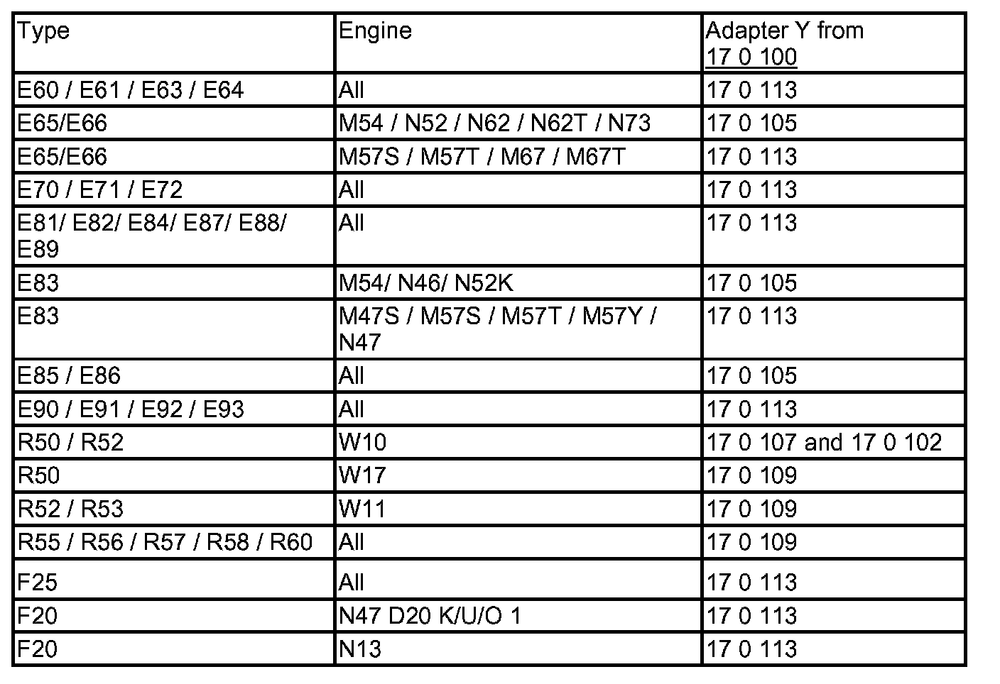

IMPORTANT:
Lifetime coolant filling:
Never reuse used coolant.
When replacing and removing components which rely on the corrosion protection effect of the coolant, it is essential to change the coolant. The cooling system must therefore be drained and refilled.
In the case of other removal work involving the draining of part quantities of coolant, replace these quantities which have been drained with new coolant.
IMPORTANT:
You must protect the alternator against contamination by coolant when carrying out repair work on the cooling circuit.
Cover alternator with suitable materials.
Failure to comply with this procedure may result in an alternator malfunction.

Note on ordering:
- Workshop equipment
- Workshop equipment catalogue
- Filler unit no. 81 39 2 152 473
- Collecting vessel no. 81 49 2 152 347
- Adapter: 17 0 100
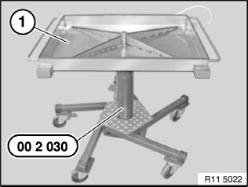
IMPORTANT:
Risk of slipping due to coolant on the floor.
Danger of injury.
Catch and dispose of emerging coolant in drip tray (1) and if necessary special tool 00 2 030 (universal hydraulic lifting equipment).
Recycling:
Observe country-specific waste disposal regulations.

IMPORTANT:
Check all the coolant hoses before filling the cooling system with the vacuum filling unit.
If necessary, replace damaged and porous coolant hoses.
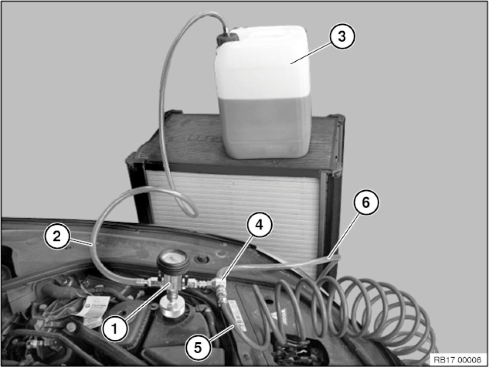
- 1) Filling unit with vacuum meter and shutoff valves
- 2) Filler hose
- 3) Coolant tank
- 4) Venturi air vent
- 5) Compressed air connection (max. 6 bar)
- 6) Outgoing-air hose (lead outgoing-air hose into a collecting vessel)
Prerequisites
- Cooling system expansion tank must be empty.
- There must be sufficiently premixed coolant in the filling unit container, 1 - 2 litres more than the vehicle filling capacity.
- Use only recommended coolant.
- Observe mixture ratio.
- Observe capacities.
- Position the filling unit container at the same height as the coolant expansion tank.
- Compressed air connection with 6 bar pressure present.
- Set vehicle heater to maximum temperature.
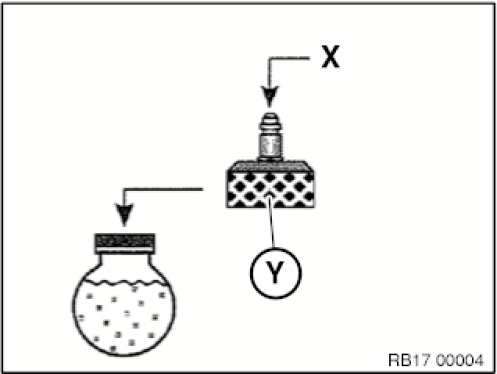
Select adapter (Y) according to table and connect to coolant expansion tank.
Connect filler unit to adapter connection (X).
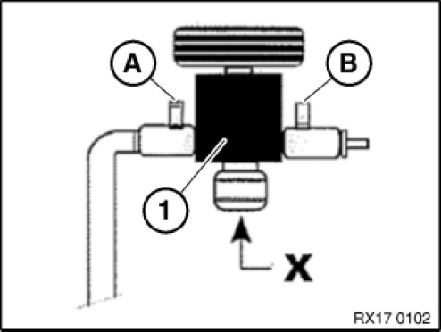
Shutoff valves (A) and (B) of the filling unit (1) must be closed.
X) Expansion tank connection
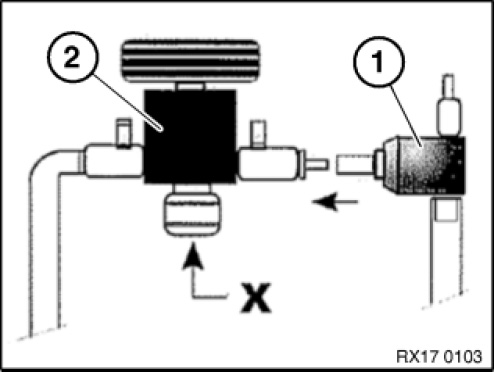
Connect venturi nozzle (1) to filling unit (2).
X) Expansion tank connection
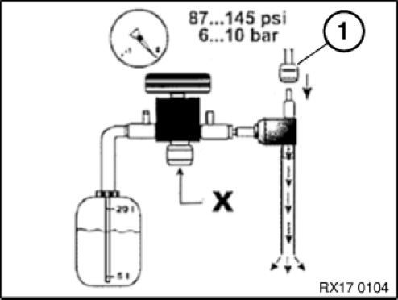
Connect compressed air (1).
X) Expansion tank connection
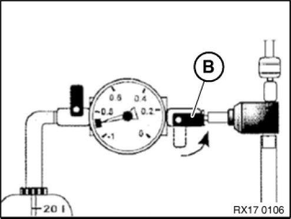
Open shutoff valve (B).
The venturi nozzle produces a flow noise.
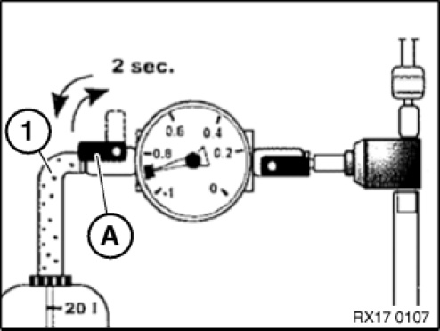
Then open shutoff valve (A) until the filling hose (1) is free of bubbles.
Close shutoff valve (A) again. The filling hose (1) is vented in this way.
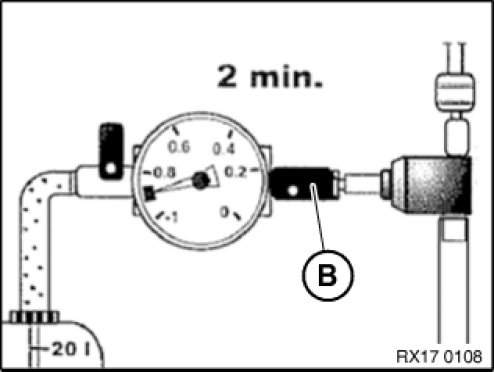
Shutoff valve (B) remains open. Generate vacuum in coolant system for approx. 2 minutes. The end vacuum is reached at a vacuum of -0.7 to -0.95 bar. Green scale on the vacuum meter.
NOTE: The coolant hoses contract during vacuum build-up.
Then close shutoff valve (B) again.
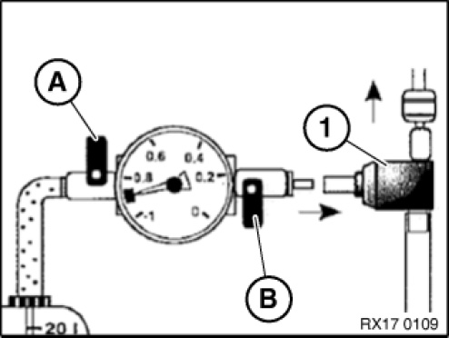
Both shutoff valves (A) and (B) must be closed. Then seal Venturi nozzle (1).
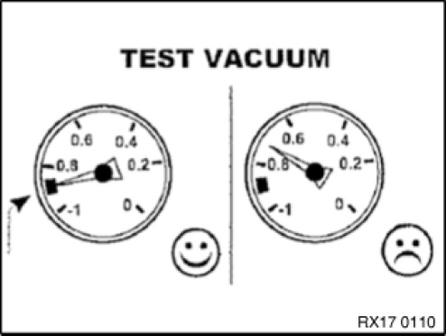
The cooling system must hold the vacuum for 30 seconds. If the needle in the vacuum meter falls, this indicates a leak in the cooling system.
If the vacuum remains constant, proceed with filling.
In event of leaks, check cooling system for leaks.
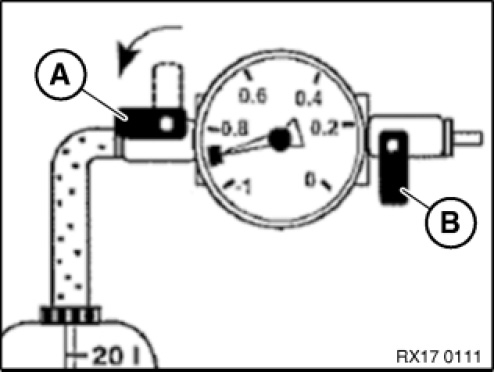
IMPORTANT:
There must be sufficiently premixed coolant in the filling unit container: 1 -2 litres more than the vehicle filling capacity.
Position the filling unit container at the same height as the coolant expansion tank.
Shut-off valve (B) remains closed during the filling process.
To fill the cooling system, open shutoff valve (A) to filling unit container.
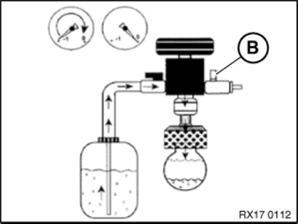
Coolant is now added.
The filling procedure is finished when the needle in the vacuum meter is at 0 bar or no longer falls.
If necessary, reduce remaining vacuum. Open shutoff valve (B) to do so.
Remove filling unit with adapter from expansion tank.
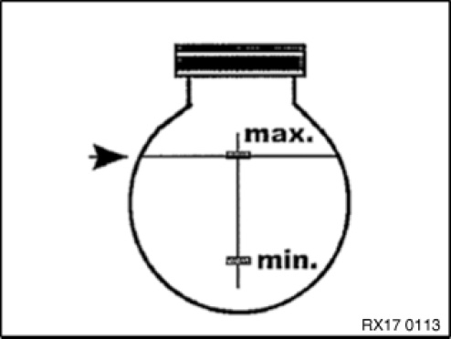
Adjust coolant level to max.
Close coolant expansion tank.
After the cooling system has been filled with the vacuum filling unit, another bleeding procedure must be performed for the following vehicles:
- E84 N20
- F25 N52T, N55
- E70, E71 N63, S63
- E72 N63
- F20N13
After the cooling system has been filled with the vacuum filling unit, another bleeding procedure must be performed for vehicles with an electric coolant pump:
NOTE:
Do not open the coolant expansion tank cap during the bleeding procedure.
Switch on the low-beam headlights to perform the bleeding procedure. If the low-beam headlights are not switched on, the ignition (Terminal 15) will switch off automatically after a certain period of time and interrupt the bleeding procedure.
1. Connect battery charger.
2. Switch the ignition on.
3. Switch on low-beam headlight.
4. Set heating to maximum temperature. Take back blower to smallest stage.
5. Press accelerator pedal for 10 seconds to floor. Engine must not be started.
6. The venting procedure is started when the accelerator pedal is pressed and takes approx. 12 minutes. (Electric coolant pump was activated and shuts down automatically after approx. 12 min).
7. Then adjust fluid level in the coolant expansion tank to max.
8. Check cooling system for leaks.
9. If the ventilation has to be performed again, deactivate DME completely (remove ignition key for approx. 3 minutes). Then repeat from point 3.
Check function of cooling system.
Check cooling system for tightness.